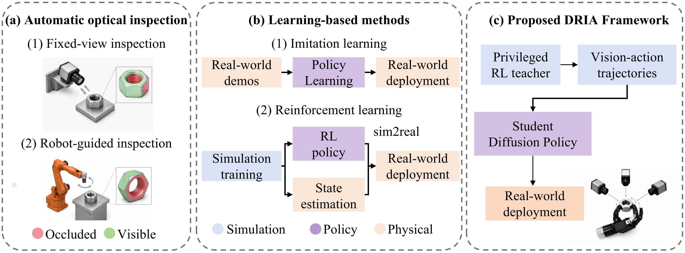

DRIA: Dexterous In-Hand Reorientation for Target ROI Image Acquisition of Complex-Shaped Industrial Parts
1School of Artificial Intelligence and Automation, Huazhong University of Science and Technology
2School of Mechanical Science and Engineering, Huazhong University of Science and Technology
3Belt and Road Joint Laboratory on Measurement and Control Technology, Huazhong University of Science and Technology
4Autonomous Intelligent Unmanned System Engineering Research Center, Ministry of Education of China, Huazhong University of Science and Technology
†Corresponding author: c_cheng@hust.edu.cn
Robotics and Computer-Integrated Manufacturing (under review)
Real-World Demonstrations
More recordings
Nut
Multi-view recordings
Simulation recordings
Abstract
Visual inspection of industrial parts often requires views of regions hidden from fixed cameras, including internal threads, rail grooves, and bearing bores. DRIA uses a dexterous hand to reorient a grasped part and expose its target region of interest. A privileged reinforcement-learning teacher generates demonstrations in simulation, which train a multi-view vision-conditioned diffusion policy. The frozen student policy transfers to the real hand using RGB observations and lightweight background alignment, without real-world demonstrations, depth sensing, object-pose estimation, or policy fine-tuning. Experiments on four industrial parts demonstrate this approach to active part presentation for visual inspection.
Method

A privileged teacher learns in-hand reorientation in simulation. Its successful trajectories train a diffusion policy, which controls the real hand from three fixed RGB cameras.
Research motivation

Parts & Experimental Setup


Target poses

In-Hand Reorientation

Additional experiment figures
Simulation and real-world trajectories

Target ROI localization

The detector evaluates acquired images and does not control the hand. Reliable rejection of absent ROIs remains unresolved.
BibTeX
@unpublished{sun2026dria,
title = {{DRIA}: Dexterous In-Hand Reorientation for Target {ROI} Image Acquisition of Complex-Shaped Industrial Parts},
author = {Sun, Xin and Wang, Shichuang and Deng, Linan and Hua, Feng and Liu, Xing and Cheng, Jun and Yang, Zhanpeng and Qiao, Xuechun and Cheng, Cheng},
note = {Research manuscript},
year = {2026}
}Acknowledgements
This work was supported in part by the National Science and Technology Major Project on Intelligent Manufacturing Systems and Robots (Grant No. 2025ZD1603003); and in part by the National Natural Science Foundation of China under Grant 62373160, Grant 62503184, and Grant T2525012.